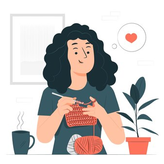

Crochê é uma técnica de artesanato que utiliza uma agulha específica e fios de diversos materiais,
como lã ou linha, para criar peças através de laçadas interligadas. Originada na Europa no século
XIX, a técnica envolve pontos básicos, como correntinha, ponto baixo, ponto alto e suas
variações.
É amplamente usada para confeccionar roupas, acessórios, peças decorativas e utilitárias. Além de ser um passatempo relaxante, o crochê é valorizado por sua capacidade de personalização e criação de itens únicos e artesanais.
É amplamente usada para confeccionar roupas, acessórios, peças decorativas e utilitárias. Além de ser um passatempo relaxante, o crochê é valorizado por sua capacidade de personalização e criação de itens únicos e artesanais.
Fazer crochê é uma atividade incrivelmente legal e terapêutica. Além de permitir a criação de peças
únicas e personalizadas, o crochê promove relaxamento e alívio do estresse. Concentração nos pontos
e movimentos repetitivos ajuda a acalmar a mente, enquanto o senso de realização ao ver uma peça
pronta aumenta a autoestima. É uma forma de expressão criativa que também oferece momentos de
tranquilidade e meditação, tornando-se um hobby prazeroso e benéfico para a saúde mental.